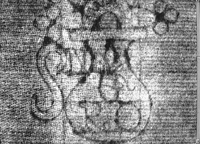
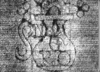

Radiographic techniques, similar to those used in hospitals and by dentists, are used in the study of archaeological artefacts. As in medical investigations, radiography reveals internal details that would otherwise be invisible. It is especially useful in museums because it is a non-destructive method, not requiring the removal of any sample. Radiography is a versatile tool: it is used to detect flaws in heavy metal castings but can also be used to provide images of watermarks in thin sheets of paper; it may reveal objects concealed in a soil block excavated from an archaeological site; it can help curators identify heavily corroded artefacts; it can assist scientists to find out how objects were made; and it is very useful to conservators, revealing cracks, corrosion and sometimes previous restorations.

How does it work? When radiation (e.g. X-rays, but also -rays, neutrons or electrons)passes into an object, some of it is absorbed, some is scattered and some may pass through the object, producing an image on a photographic film or fluorescent screen placed behind the object. The amount of radiation that passes through will depend on several factors, including the energy of the radiation and the composition and thickness of the object. Thus, it is possible to see the internal structure and identify breaks, joins, inlays of different materials and enclosed objects - for example, amulets in the wrappings of mummies, just as a chest X-ray may reveal a broken rib.
 

Because the penetration of the radiation depends on its energy and on the thickness and type of material being irradiated, the radiation source has to be suitable for the subject. For example, paper is thin and not very dense, so that a watermark in the paper, perhaps obscured by ink, can be imaged using the low energy electron radiation from a Carbon-14 isotope source. But this radiation would be far to weak to examine a bronze statue; for this, high-energy X-rays (e.g. 250 kilovolts) from an X-ray set or gamma rays from a Cobalt-60 isotope source would be needed.